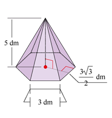

1.
Escribe V si es verdadero o F si es falso en
los nunciados según corresponda.
2.
Plantea un sistema de ecuaciones lineales a partir de los siguientes enunciados y
encuentra su solución utilizando cualquier método.
3.
Encuentra la solución para cada sistema de ecuaciones lineales utilizando el método asignado.
4.
Calcula el área y volumen de los siguientes cilindro y cono:
5.
Determina la cantidad de agua que puede almacenar el siguiente bebedero, cuyo lado es un
trapecio isósceles y el valor de sus medidas se muestra en la siguiente figura:
Respuesta. La cantidad máxima de agua que soporta es de centímetros cúbicos.
Respuesta. La cantidad máxima de agua que soporta es de centímetros cúbicos.
6.
Halla volumen de la siguiente pirámide:

7.
Pedro hace velas con forma de tronco de cono. Indica la cantidad de cera que necesita
para hacer un pedido de 50 velas. Las dimensiones de la vela se muestran en la siguiente figura: